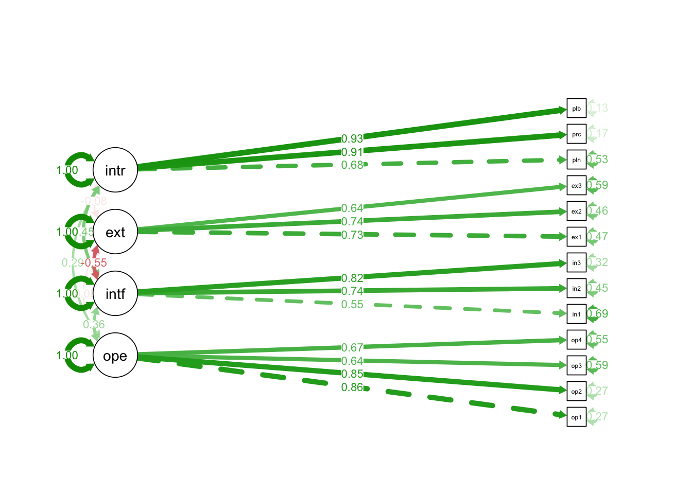
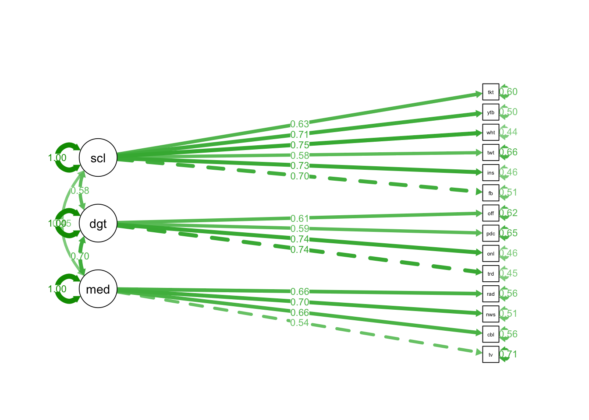
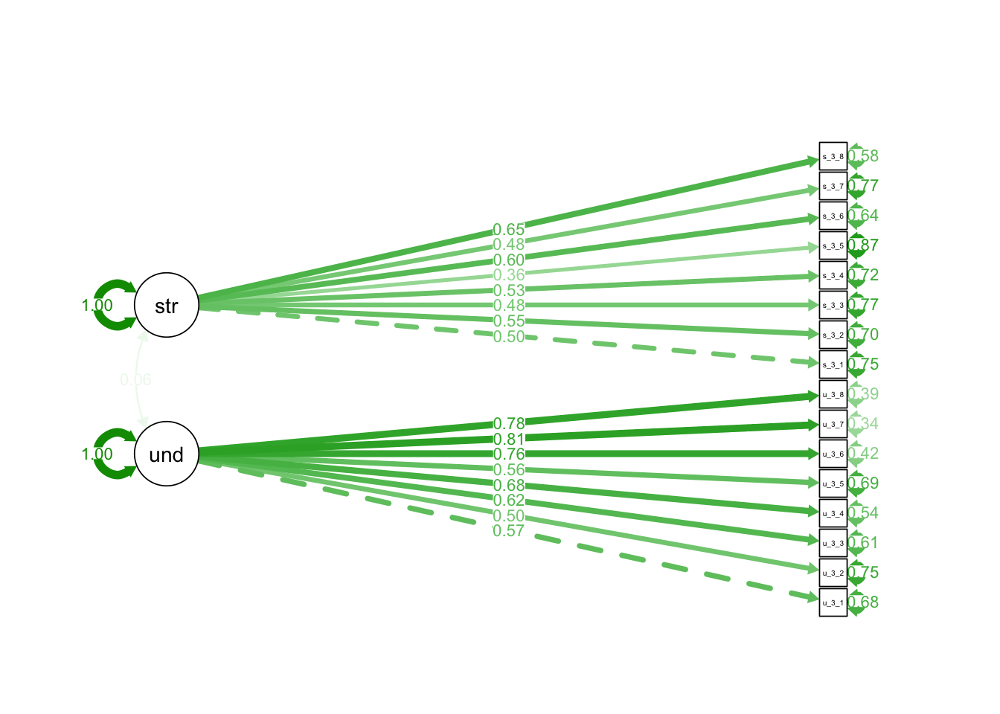
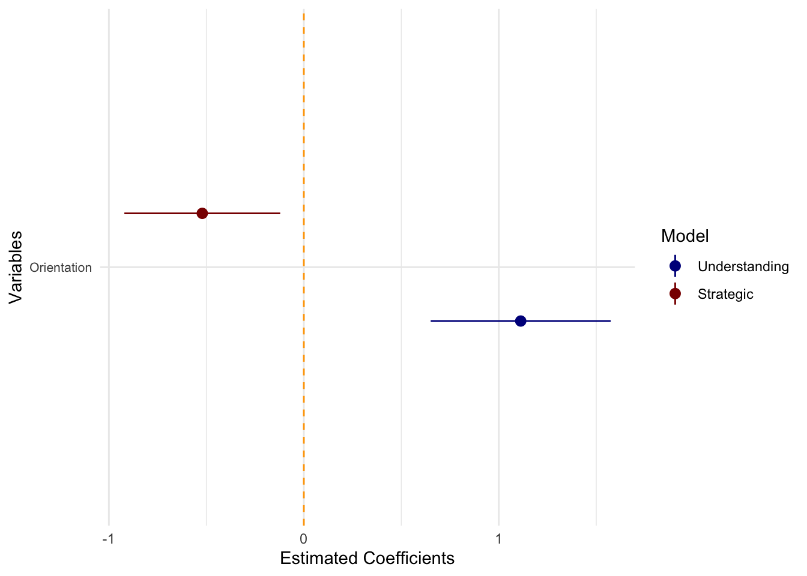
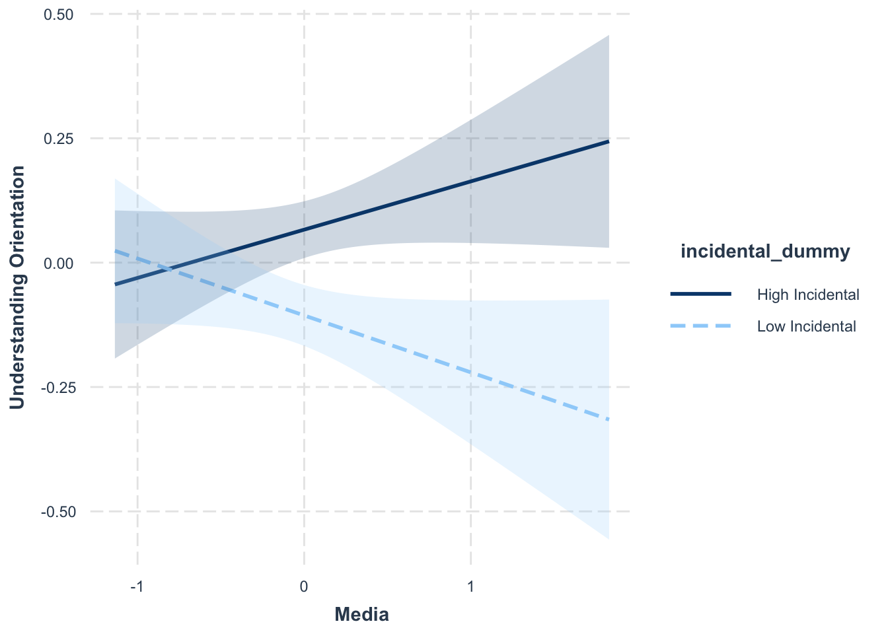

Quarto_Paper_MaC
Democracy and social media: Between the dialogue and the strategy
Andrés Scherman1, Pedro Fierro2 and Leo Yuanliang Shan3
1 LEAS at School of Communication and Journalism, Universidad Adolfo Ibáñez.
2 Business School, Universidad Adolfo Ibáñez; and Department of Media and Communication, London School of Economics.
3 School of Journalism and Mass Communication, University of Wisconsin-Madison.
Abstract
This study analyzes the role of traditional news media and social media in public deliberation within democratic systems. Using the concepts of Understanding Orientation (consensus-oriented, communicative rationality) and Strategic Orientation (goal-oriented, instrumental rationality), proposed by Jürgen Habermas, this study looks at the public space in a digital context to explore how the news media can either contribute to the existence of rational communication in the public debate or, conversely, promote interventions of a strategic nature. To estimate the influence of traditional news media and social media on the orientation to engage in dialogue with others within a framework of rationality and equality, this study relies on a two-wave online panel survey conducted in Chile before and after the constitutional referendum, held on September 4, 2022, a period of intense political polarization. The first wave (T1) received 2,117 responses, and the second wave (T2) received 903 responses. Results show that Understanding Orientation is a predictor of political situations linked to public deliberation, such as Political Participation and Political Interest. However, news consumption in both traditional news outlets and social media is not associated with the presence of Understanding Orientation, but rather with Strategic Orientation. These results support a more pessimistic view of the contribution of the news media and social media to creating a rational public sphere, where reason should predominate in interactions between citizens to strengthen democracy.
Methodology
Data
The data for this study was obtained from a national survey conducted in Chile under the supervision of the Millennium Nucleus for the Study of Politics, Public Opinion, and Media in Chile (Nucleo MEPOP). The complete survey consisted of three waves, but this study only utilizes data from the first and third waves. Wave 1 was conducted between August 25 and September 8, while Wave 3 was conducted between [insert dates]. The total sample size for this analysis was 950 individuals, specifically those who participated in both Wave 1 and Wave 3.
It is important to note that the survey instrument did not necessarily include the same questions across all three waves. As a result, the analyses presented in this paper are cross-sectional in nature. While the dependent variable was constructed from responses in Wave 3, all independent variables were drawn from Wave 1. The survey design employed quotas based on gender, age, and socioeconomic level, ensuring alignment with national distributions.
Variables
Understanding orientation:
Following the previously mentioned literature, understanding orientation was measured by asking respondents to indicate how much they agree or disagree with the following statements:
Under1: “In political conversations, it is essential to listen carefully to what others have to say.”
Under2: “When I talk about politics, learning is more important to me than convincing.”
Under3: “Through my conversations, I promote solidarity with others.”
Under4: “At its core, politics aims to reach agreements through conversation.”
Under5: “When I talk about politics, I feel connected to the people I talk with.”
Under6: “Through conversation, political interests can be directed toward the common good.”
Under7: “Talking about politics allows me to understand why others see things differently.”
Under8: “Political conversations are important for protecting people’s rights.”
All responses were measured on a 5-point Likert scale, where 1 indicated strong disagreement and 5 indicated strong agreement. A factor was constructed using the eight responses (α = 0.86).
Strategic Orientation
Similarly, to measure strategic orientations, all respondents were asked to indicate how much they agree or disagree with the following statements:
Strate1: “Saying one thing while thinking another is fundamental when talking about politics.”
Strate2: “I talk about politics if I gain something from it.”
Strate3: “In political conversations, form is more important than content.”
Strate4: “When talking about politics, it is sometimes better not to express what you truly think.”
Strate5: “People are tired of being asked to talk in order to reach political agreements.”
Strate6: “The head of the household decides and does not need to reach an agreement with other family members.”
Strate7: “Instead of so much discussion, it’s better for someone to just say how things are.”
Strate8: “Trying to reach agreements through conversation is a waste of time; it’s better if someone decides what to do and gets it done.”
All responses were measured on a 5-point Likert scale, where 1 indicated strong disagreement and 5 indicated strong agreement. A factor was constructed using the eight responses (α = 0.75).
Political Efficacy
In line with the literature, political efficacy was divided into three distinct dimensions. First, external efficacy—i.e., beliefs about system responsiveness—was measured using the following statements:
extef1: “Politicians don’t really care about what voters think.”
extef2: “Politicians waste a lot of taxpayers’ money.”
extef3: “People like me have no influence over what is decided in parliament or government.”
Similarly, internal efficacy—self-competence beliefs—was measured with the following statements:
intef1: “In general, I don’t find it difficult to take a stance on political issues.”
intef2: “People like me are qualified to participate in political discussions.”
intef3: “People like me have political opinions that are worth listening to.”
Finally, following recent literature, an additional set of questions was used to measure online political efficacy—i.e., the belief that, because of the Internet, it is possible to have more influence on politics and public issues:
ope1: “Using the internet, people like me have more political power.”
ope2: “Using the internet, I can have more say over what the government does.”
ope3: “Using the internet, it is easier for me to understand politics.”
ope4: “Using the internet, public officials care more about what I think.”
All responses were measured on a 5-point Likert scale, where 1 indicated strong disagreement and 5 indicated strong agreement. A factor was created for each of the dimensions (external efficacy: α = XX; internal efficacy: α = XX; online political efficacy: α = XX).
Understanding Orientation
Strategic Orientation
Political Efficacy
Political Interest
Media Exposure
Sociodemographic Variables
Analysis
Analysis
To test our hypothesis, the analysis was divided into two parts. First, different factors were created for the variables described in the previous section using Confirmatory Factor Analysis (CFA). We chose this technique because the selection of variables was theoretically grounded and supported by previous literature. Figures 1, 2, and 3 present the measurement models for the nine factors we developed.
Figure 1 Measurement Model for Political Efficacies
Note: Own elaboration.
Figure 2 Measurment model for Media Exposure

Note: Own elaboration.
Figure 3 Measurment model for understanding and strategic orientations

Note: Own elaboration.
The second part of the analysis explored which variables might be related to the propensity for having an understanding or strategic orientation toward political interactions, using traditional OLS regressions. We recognize that, given the nature of our data and the design of the analysis, Structural Equation Modeling (SEM) could be a more appropriate method to test these interactions. The advantage of SEM is that it allows us to create latent factors from observable variables—as we did—and simultaneously test the interactions between variables in the model. To ensure the robustness of our results, we also applied SEM for two of the orientations. These results, which are presented in the appendix, are consistent with the findings described in the following section.
Results
Table 1 OLS Regression for Understanding Orientation.
Call:
lm(formula = under ~ ses + sex + age_num + media + digital +
social + interest + intercon + extef + intef + ope, data = merged_data)
Residuals:
Min 1Q Median 3Q Max
-1.77865 -0.31052 0.03956 0.35621 1.21686
Coefficients:
Estimate Std. Error t value Pr(>|t|)
(Intercept) -0.177903 0.109009 -1.632 0.10324
ses -0.006956 0.018314 -0.380 0.70421
sex -0.010693 0.043162 -0.248 0.80442
age_num 0.004015 0.001643 2.444 0.01483 *
media 0.019171 0.053607 0.358 0.72077
digital 0.007140 0.046609 0.153 0.87831
social 0.057963 0.028449 2.037 0.04207 *
interest 0.065331 0.027790 2.351 0.01907 *
intercon 0.193120 0.064848 2.978 0.00303 **
extef 0.002854 0.037890 0.075 0.93998
intef 0.135245 0.059487 2.274 0.02337 *
ope 0.052075 0.023551 2.211 0.02743 *
---
Signif. codes: 0 '***' 0.001 '**' 0.01 '*' 0.05 '.' 0.1 ' ' 1
Residual standard error: 0.4996 on 560 degrees of freedom
Multiple R-squared: 0.1744, Adjusted R-squared: 0.1582
F-statistic: 10.76 on 11 and 560 DF, p-value: < 0.00000000000000022Table 2 OLS Regression for Strategic Orientation.
Call:
lm(formula = strate ~ ses + sex + age_num + media + digital +
social + interest + intercon + extef + intef + ope, data = merged_data)
Residuals:
Min 1Q Median 3Q Max
-1.62600 -0.35308 0.02019 0.30218 1.96623
Coefficients:
Estimate Std. Error t value Pr(>|t|)
(Intercept) 0.131761 0.115549 1.140 0.254645
ses 0.040941 0.019413 2.109 0.035391 *
sex -0.106134 0.045751 -2.320 0.020710 *
age_num -0.004426 0.001741 -2.542 0.011302 *
media 0.218610 0.056823 3.847 0.000133 ***
digital -0.098328 0.049405 -1.990 0.047050 *
social 0.070146 0.030155 2.326 0.020367 *
interest -0.025639 0.029457 -0.870 0.384471
intercon -0.121941 0.068739 -1.774 0.076610 .
extef -0.045799 0.040164 -1.140 0.254646
intef -0.143806 0.063056 -2.281 0.022947 *
ope 0.077746 0.024964 3.114 0.001938 **
---
Signif. codes: 0 '***' 0.001 '**' 0.01 '*' 0.05 '.' 0.1 ' ' 1
Residual standard error: 0.5296 on 560 degrees of freedom
Multiple R-squared: 0.1197, Adjusted R-squared: 0.1024
F-statistic: 6.922 on 11 and 560 DF, p-value: 0.00000000005173Figure 4 Coefplot for understanding orientation and strategic orientation.

Appendix
Appendix 1 SEM for Understanding Orientation
lavaan 0.6.16 ended normally after 69 iterations
Estimator ML
Optimization method NLMINB
Number of model parameters 102
Number of observations 572
Model Test User Model:
Test statistic 1991.961
Degrees of freedom 668
P-value (Chi-square) 0.000
Model Test Baseline Model:
Test statistic 9457.615
Degrees of freedom 735
P-value 0.000
User Model versus Baseline Model:
Comparative Fit Index (CFI) 0.848
Tucker-Lewis Index (TLI) 0.833
Loglikelihood and Information Criteria:
Loglikelihood user model (H0) -30419.686
Loglikelihood unrestricted model (H1) -29423.706
Akaike (AIC) 61043.372
Bayesian (BIC) 61486.984
Sample-size adjusted Bayesian (SABIC) 61163.179
Root Mean Square Error of Approximation:
RMSEA 0.059
90 Percent confidence interval - lower 0.056
90 Percent confidence interval - upper 0.062
P-value H_0: RMSEA <= 0.050 0.000
P-value H_0: RMSEA >= 0.080 0.000
Standardized Root Mean Square Residual:
SRMR 0.063
Parameter Estimates:
Standard errors Standard
Information Expected
Information saturated (h1) model Structured
Latent Variables:
Estimate Std.Err z-value P(>|z|) Std.lv Std.all
ope_a1 =~
ope1 1.000 1.109 0.854
ope2 1.001 0.045 22.234 0.000 1.110 0.854
ope3 0.758 0.047 16.143 0.000 0.841 0.645
ope4 0.774 0.045 17.068 0.000 0.858 0.674
intef_a1 =~
intef1 1.000 0.676 0.548
intef2 1.391 0.118 11.791 0.000 0.941 0.744
intef3 1.473 0.122 12.109 0.000 0.996 0.826
extef_a1 =~
extef1 1.000 0.916 0.725
extef2 0.984 0.076 13.010 0.000 0.901 0.737
extef3 0.943 0.077 12.214 0.000 0.864 0.639
interest_a1 =~
polint 1.000 1.003 0.686
procint 1.360 0.070 19.441 0.000 1.364 0.909
plebint 1.401 0.072 19.530 0.000 1.405 0.932
media_a1 =~
tv 1.000 0.805 0.541
cable 1.201 0.114 10.506 0.000 0.966 0.662
newspaper 1.137 0.106 10.778 0.000 0.915 0.699
radio 1.178 0.112 10.511 0.000 0.948 0.662
digital_a1 =~
tradonline 1.000 1.013 0.734
online 1.026 0.067 15.397 0.000 1.039 0.744
podcast 0.694 0.055 12.625 0.000 0.703 0.593
officialsm 0.888 0.068 13.014 0.000 0.899 0.612
social_a1 =~
fb 1.000 1.111 0.705
insta 1.035 0.066 15.746 0.000 1.150 0.740
twitter 0.827 0.065 12.676 0.000 0.919 0.585
whatsapp 1.099 0.070 15.777 0.000 1.222 0.741
youtube 0.970 0.064 15.065 0.000 1.077 0.704
tiktok 0.852 0.063 13.614 0.000 0.947 0.631
under_a1 =~
under_w3_1 1.000 0.571 0.562
under_w3_2 1.046 0.107 9.741 0.000 0.598 0.494
under_w3_3 1.152 0.100 11.480 0.000 0.658 0.620
under_w3_4 1.432 0.119 12.054 0.000 0.818 0.668
under_w3_5 1.154 0.108 10.676 0.000 0.659 0.559
under_w3_6 1.566 0.120 13.047 0.000 0.894 0.761
under_w3_7 1.637 0.122 13.431 0.000 0.935 0.803
under_w3_8 1.586 0.120 13.189 0.000 0.906 0.776
Regressions:
Estimate Std.Err z-value P(>|z|) Std.lv Std.all
under_a1 ~
ses -0.008 0.020 -0.420 0.674 -0.015 -0.018
sex -0.011 0.048 -0.233 0.816 -0.019 -0.010
age_num 0.005 0.002 2.631 0.009 0.008 0.114
media_a1 0.020 0.058 0.342 0.733 0.028 0.028
digital_a1 0.002 0.052 0.038 0.969 0.004 0.004
social_a1 0.067 0.032 2.060 0.039 0.130 0.130
interest_a1 0.074 0.031 2.359 0.018 0.130 0.130
intercon 0.221 0.072 3.064 0.002 0.387 0.129
extef_a1 0.002 0.042 0.042 0.966 0.003 0.003
intef_a1 0.158 0.069 2.291 0.022 0.187 0.187
ope_a1 0.057 0.027 2.089 0.037 0.111 0.111
Covariances:
Estimate Std.Err z-value P(>|z|) Std.lv Std.all
ope_a1 ~~
intef_a1 0.272 0.044 6.170 0.000 0.363 0.363
extef_a1 -0.083 0.053 -1.565 0.118 -0.081 -0.081
interest_a1 0.325 0.056 5.801 0.000 0.292 0.292
media_a1 0.090 0.047 1.921 0.055 0.101 0.101
digital_a1 0.304 0.060 5.070 0.000 0.270 0.270
social_a1 0.349 0.064 5.461 0.000 0.283 0.283
intef_a1 ~~
extef_a1 -0.339 0.046 -7.419 0.000 -0.547 -0.547
interest_a1 0.309 0.044 7.059 0.000 0.455 0.455
media_a1 0.087 0.031 2.792 0.005 0.159 0.159
digital_a1 0.162 0.039 4.144 0.000 0.237 0.237
social_a1 0.061 0.039 1.578 0.114 0.081 0.081
extef_a1 ~~
interest_a1 -0.072 0.046 -1.560 0.119 -0.079 -0.079
media_a1 0.036 0.041 0.858 0.391 0.048 0.048
digital_a1 0.004 0.051 0.076 0.939 0.004 0.004
social_a1 0.134 0.054 2.461 0.014 0.131 0.131
interest_a1 ~~
media_a1 0.144 0.043 3.365 0.001 0.179 0.179
digital_a1 0.298 0.054 5.477 0.000 0.293 0.293
social_a1 0.250 0.056 4.480 0.000 0.224 0.224
media_a1 ~~
digital_a1 0.570 0.068 8.354 0.000 0.699 0.699
social_a1 0.402 0.060 6.703 0.000 0.449 0.449
digital_a1 ~~
social_a1 0.658 0.074 8.864 0.000 0.584 0.584
Variances:
Estimate Std.Err z-value P(>|z|) Std.lv Std.all
.ope1 0.458 0.047 9.845 0.000 0.458 0.271
.ope2 0.458 0.047 9.830 0.000 0.458 0.271
.ope3 0.995 0.066 15.187 0.000 0.995 0.584
.ope4 0.884 0.059 14.879 0.000 0.884 0.545
.intef1 1.065 0.070 15.294 0.000 1.065 0.700
.intef2 0.716 0.061 11.808 0.000 0.716 0.447
.intef3 0.462 0.054 8.509 0.000 0.462 0.318
.extef1 0.756 0.070 10.852 0.000 0.756 0.474
.extef2 0.685 0.065 10.466 0.000 0.685 0.458
.extef3 1.083 0.082 13.251 0.000 1.083 0.592
.polint 1.132 0.072 15.664 0.000 1.132 0.529
.procint 0.390 0.050 7.765 0.000 0.390 0.173
.plebint 0.297 0.050 5.893 0.000 0.297 0.131
.tv 1.566 0.105 14.948 0.000 1.566 0.707
.cable 1.198 0.091 13.156 0.000 1.198 0.562
.newspaper 0.877 0.071 12.302 0.000 0.877 0.512
.radio 1.149 0.087 13.143 0.000 1.149 0.561
.tradonline 0.881 0.071 12.480 0.000 0.881 0.462
.online 0.869 0.071 12.185 0.000 0.869 0.446
.podcast 0.911 0.061 14.889 0.000 0.911 0.648
.officialsm 1.347 0.092 14.668 0.000 1.347 0.625
.fb 1.246 0.088 14.116 0.000 1.246 0.502
.insta 1.095 0.081 13.494 0.000 1.095 0.453
.twitter 1.626 0.105 15.456 0.000 1.626 0.658
.whatsapp 1.222 0.091 13.459 0.000 1.222 0.450
.youtube 1.183 0.084 14.142 0.000 1.183 0.505
.tiktok 1.358 0.090 15.058 0.000 1.358 0.602
.under_w3_1 0.706 0.044 15.875 0.000 0.706 0.684
.under_w3_2 1.106 0.068 16.189 0.000 1.106 0.756
.under_w3_3 0.694 0.045 15.509 0.000 0.694 0.616
.under_w3_4 0.832 0.055 15.099 0.000 0.832 0.554
.under_w3_5 0.957 0.060 15.894 0.000 0.957 0.688
.under_w3_6 0.580 0.042 13.782 0.000 0.580 0.420
.under_w3_7 0.481 0.038 12.778 0.000 0.481 0.355
.under_w3_8 0.542 0.040 13.467 0.000 0.542 0.397
ope_a1 1.231 0.103 11.916 0.000 1.000 1.000
intef_a1 0.457 0.071 6.455 0.000 1.000 1.000
extef_a1 0.839 0.099 8.498 0.000 1.000 1.000
interest_a1 1.006 0.111 9.092 0.000 1.000 1.000
media_a1 0.648 0.105 6.185 0.000 1.000 1.000
digital_a1 1.027 0.111 9.267 0.000 1.000 1.000
social_a1 1.235 0.136 9.089 0.000 1.000 1.000
.under_a1 0.265 0.039 6.863 0.000 0.812 0.812Appendix 2 SEM for Strategic Orientation
lavaan 0.6.16 ended normally after 65 iterations
Estimator ML
Optimization method NLMINB
Number of model parameters 102
Number of observations 572
Model Test User Model:
Test statistic 1977.587
Degrees of freedom 668
P-value (Chi-square) 0.000
Model Test Baseline Model:
Test statistic 8440.118
Degrees of freedom 735
P-value 0.000
User Model versus Baseline Model:
Comparative Fit Index (CFI) 0.830
Tucker-Lewis Index (TLI) 0.813
Loglikelihood and Information Criteria:
Loglikelihood user model (H0) -31514.243
Loglikelihood unrestricted model (H1) -30525.449
Akaike (AIC) 63232.485
Bayesian (BIC) 63676.098
Sample-size adjusted Bayesian (SABIC) 63352.292
Root Mean Square Error of Approximation:
RMSEA 0.059
90 Percent confidence interval - lower 0.056
90 Percent confidence interval - upper 0.062
P-value H_0: RMSEA <= 0.050 0.000
P-value H_0: RMSEA >= 0.080 0.000
Standardized Root Mean Square Residual:
SRMR 0.065
Parameter Estimates:
Standard errors Standard
Information Expected
Information saturated (h1) model Structured
Latent Variables:
Estimate Std.Err z-value P(>|z|) Std.lv Std.all
ope_a2 =~
ope1 1.000 1.110 0.854
ope2 0.999 0.045 22.209 0.000 1.108 0.853
ope3 0.758 0.047 16.131 0.000 0.841 0.644
ope4 0.776 0.045 17.141 0.000 0.861 0.677
intef_a2 =~
intef1 1.000 0.680 0.551
intef2 1.388 0.117 11.843 0.000 0.944 0.746
intef3 1.458 0.120 12.142 0.000 0.991 0.822
extef_a2 =~
extef1 1.000 0.918 0.727
extef2 0.978 0.075 13.008 0.000 0.898 0.734
extef3 0.944 0.077 12.239 0.000 0.866 0.640
interest_a2 =~
polint 1.000 1.002 0.685
procint 1.361 0.070 19.402 0.000 1.363 0.909
plebint 1.403 0.072 19.486 0.000 1.406 0.933
media_a2 =~
tv 1.000 0.809 0.543
cable 1.205 0.113 10.642 0.000 0.974 0.667
newspaper 1.131 0.104 10.878 0.000 0.914 0.698
radio 1.163 0.110 10.559 0.000 0.940 0.657
digital_a2 =~
tradonline 1.000 1.013 0.733
online 1.024 0.067 15.361 0.000 1.037 0.743
podcast 0.694 0.055 12.606 0.000 0.702 0.592
officialsm 0.892 0.068 13.055 0.000 0.903 0.615
social_a2 =~
fb 1.000 1.114 0.707
insta 1.030 0.065 15.741 0.000 1.147 0.737
twitter 0.823 0.065 12.663 0.000 0.917 0.583
whatsapp 1.098 0.069 15.833 0.000 1.223 0.742
youtube 0.968 0.064 15.108 0.000 1.078 0.704
tiktok 0.851 0.062 13.651 0.000 0.948 0.631
strate_a2 =~
strate_w3_1 1.000 0.647 0.510
strate_w3_2 1.082 0.119 9.073 0.000 0.700 0.564
strate_w3_3 0.987 0.121 8.128 0.000 0.639 0.472
strate_w3_4 1.042 0.123 8.452 0.000 0.674 0.501
strate_w3_5 0.646 0.103 6.291 0.000 0.418 0.334
strate_w3_6 1.234 0.132 9.343 0.000 0.799 0.594
strate_w3_7 1.020 0.123 8.270 0.000 0.660 0.484
strate_w3_8 1.363 0.139 9.810 0.000 0.882 0.656
Regressions:
Estimate Std.Err z-value P(>|z|) Std.lv Std.all
strate_a2 ~
ses 0.054 0.025 2.157 0.031 0.084 0.102
sex -0.148 0.061 -2.440 0.015 -0.229 -0.114
age_num -0.006 0.002 -2.840 0.005 -0.010 -0.137
media_a2 0.301 0.081 3.737 0.000 0.376 0.376
digital_a2 -0.135 0.068 -1.983 0.047 -0.211 -0.211
social_a2 0.087 0.041 2.110 0.035 0.150 0.150
interest_a2 -0.034 0.039 -0.861 0.389 -0.052 -0.052
intercon -0.167 0.089 -1.875 0.061 -0.258 -0.086
extef_a2 -0.069 0.054 -1.285 0.199 -0.098 -0.098
intef_a2 -0.205 0.088 -2.330 0.020 -0.215 -0.215
ope_a2 0.115 0.036 3.207 0.001 0.197 0.197
Covariances:
Estimate Std.Err z-value P(>|z|) Std.lv Std.all
ope_a2 ~~
intef_a2 0.274 0.044 6.173 0.000 0.363 0.363
extef_a2 -0.083 0.053 -1.564 0.118 -0.081 -0.081
interest_a2 0.325 0.056 5.799 0.000 0.292 0.292
media_a2 0.091 0.047 1.928 0.054 0.101 0.101
digital_a2 0.304 0.060 5.070 0.000 0.270 0.270
social_a2 0.350 0.064 5.462 0.000 0.283 0.283
intef_a2 ~~
extef_a2 -0.342 0.046 -7.443 0.000 -0.549 -0.549
interest_a2 0.310 0.044 7.076 0.000 0.456 0.456
media_a2 0.088 0.031 2.809 0.005 0.160 0.160
digital_a2 0.163 0.039 4.146 0.000 0.237 0.237
social_a2 0.061 0.039 1.566 0.117 0.081 0.081
extef_a2 ~~
interest_a2 -0.073 0.047 -1.564 0.118 -0.079 -0.079
media_a2 0.036 0.042 0.864 0.388 0.048 0.048
digital_a2 0.004 0.051 0.078 0.937 0.004 0.004
social_a2 0.134 0.055 2.458 0.014 0.131 0.131
interest_a2 ~~
media_a2 0.145 0.043 3.374 0.001 0.179 0.179
digital_a2 0.298 0.054 5.475 0.000 0.293 0.293
social_a2 0.250 0.056 4.476 0.000 0.224 0.224
media_a2 ~~
digital_a2 0.571 0.068 8.377 0.000 0.697 0.697
social_a2 0.406 0.060 6.734 0.000 0.450 0.450
digital_a2 ~~
social_a2 0.659 0.074 8.873 0.000 0.585 0.585
Variances:
Estimate Std.Err z-value P(>|z|) Std.lv Std.all
.ope1 0.457 0.046 9.833 0.000 0.457 0.271
.ope2 0.462 0.047 9.911 0.000 0.462 0.273
.ope3 0.996 0.066 15.187 0.000 0.996 0.585
.ope4 0.879 0.059 14.848 0.000 0.879 0.542
.intef1 1.060 0.070 15.254 0.000 1.060 0.696
.intef2 0.711 0.061 11.711 0.000 0.711 0.444
.intef3 0.471 0.054 8.668 0.000 0.471 0.324
.extef1 0.752 0.070 10.806 0.000 0.752 0.472
.extef2 0.691 0.065 10.571 0.000 0.691 0.462
.extef3 1.079 0.082 13.217 0.000 1.079 0.590
.polint 1.134 0.072 15.670 0.000 1.134 0.531
.procint 0.392 0.051 7.753 0.000 0.392 0.174
.plebint 0.294 0.051 5.790 0.000 0.294 0.129
.tv 1.560 0.104 14.969 0.000 1.560 0.705
.cable 1.183 0.090 13.142 0.000 1.183 0.555
.newspaper 0.879 0.071 12.429 0.000 0.879 0.513
.radio 1.163 0.087 13.345 0.000 1.163 0.568
.tradonline 0.882 0.071 12.487 0.000 0.882 0.462
.online 0.873 0.071 12.220 0.000 0.873 0.448
.podcast 0.912 0.061 14.892 0.000 0.912 0.649
.officialsm 1.341 0.092 14.635 0.000 1.341 0.622
.fb 1.241 0.088 14.092 0.000 1.241 0.500
.insta 1.103 0.081 13.543 0.000 1.103 0.456
.twitter 1.630 0.105 15.470 0.000 1.630 0.660
.whatsapp 1.218 0.091 13.440 0.000 1.218 0.449
.youtube 1.181 0.084 14.136 0.000 1.181 0.504
.tiktok 1.356 0.090 15.053 0.000 1.356 0.601
.strate_w3_1 1.191 0.079 15.124 0.000 1.191 0.740
.strate_w3_2 1.054 0.073 14.539 0.000 1.054 0.682
.strate_w3_3 1.424 0.092 15.457 0.000 1.424 0.777
.strate_w3_4 1.356 0.089 15.207 0.000 1.356 0.749
.strate_w3_5 1.395 0.086 16.278 0.000 1.395 0.889
.strate_w3_6 1.169 0.083 14.123 0.000 1.169 0.647
.strate_w3_7 1.421 0.093 15.354 0.000 1.421 0.765
.strate_w3_8 1.029 0.079 13.048 0.000 1.029 0.570
ope_a2 1.232 0.103 11.923 0.000 1.000 1.000
intef_a2 0.462 0.071 6.488 0.000 1.000 1.000
extef_a2 0.842 0.099 8.518 0.000 1.000 1.000
interest_a2 1.004 0.111 9.078 0.000 1.000 1.000
media_a2 0.654 0.105 6.240 0.000 1.000 1.000
digital_a2 1.025 0.111 9.257 0.000 1.000 1.000
social_a2 1.241 0.136 9.117 0.000 1.000 1.000
.strate_a2 0.334 0.060 5.562 0.000 0.798 0.798Working with W1
Appendix 1. OLS for Understanding Orientation just using W1.
Call:
lm(formula = under_1 ~ ses + sex + age_num + media_1 + digital_1 +
social_1 + interest_1 + intercon + extef_1 + intef_1 + ope_1,
data = data_justw1_na)
Residuals:
Min 1Q Median 3Q Max
-2.49417 -0.36644 0.04804 0.40449 1.86981
Coefficients:
Estimate Std. Error t value Pr(>|t|)
(Intercept) -0.112761 0.078035 -1.445 0.14869
ses -0.007048 0.013548 -0.520 0.60299
sex 0.010200 0.030837 0.331 0.74086
age_num 0.002752 0.001143 2.408 0.01617 *
media_1 0.034251 0.038221 0.896 0.37034
digital_1 0.056332 0.035766 1.575 0.11549
social_1 -0.004627 0.023972 -0.193 0.84699
interest_1 0.197071 0.020292 9.712 < 0.0000000000000002 ***
intercon 0.084182 0.047030 1.790 0.07368 .
extef_1 -0.074802 0.025581 -2.924 0.00351 **
intef_1 0.081919 0.042773 1.915 0.05567 .
ope_1 0.099274 0.018039 5.503 0.0000000445 ***
---
Signif. codes: 0 '***' 0.001 '**' 0.01 '*' 0.05 '.' 0.1 ' ' 1
Residual standard error: 0.5604 on 1365 degrees of freedom
Multiple R-squared: 0.2616, Adjusted R-squared: 0.2556
F-statistic: 43.96 on 11 and 1365 DF, p-value: < 0.00000000000000022Appendix 2. OLS for Strategic Orientation just using W1.
Call:
lm(formula = strate_1 ~ ses + sex + age_num + media_1 + digital_1 +
social_1 + interest_1 + intercon + extef_1 + intef_1 + ope_1,
data = data_justw1_na)
Residuals:
Min 1Q Median 3Q Max
-1.13516 -0.30497 0.02747 0.27601 1.54873
Coefficients:
Estimate Std. Error t value Pr(>|t|)
(Intercept) -0.0752466 0.0588454 -1.279 0.201214
ses 0.0299412 0.0102160 2.931 0.003437 **
sex 0.0064777 0.0232537 0.279 0.780620
age_num -0.0002269 0.0008618 -0.263 0.792387
media_1 0.0723703 0.0288224 2.511 0.012157 *
digital_1 -0.0015713 0.0269711 -0.058 0.953551
social_1 0.0218022 0.0180770 1.206 0.227999
interest_1 -0.0198537 0.0153017 -1.297 0.194684
intercon -0.1190581 0.0354647 -3.357 0.000809 ***
extef_1 -0.0489088 0.0192902 -2.535 0.011342 *
intef_1 -0.0623574 0.0322543 -1.933 0.053405 .
ope_1 0.0752496 0.0136028 5.532 0.0000000379 ***
---
Signif. codes: 0 '***' 0.001 '**' 0.01 '*' 0.05 '.' 0.1 ' ' 1
Residual standard error: 0.4226 on 1365 degrees of freedom
Multiple R-squared: 0.06843, Adjusted R-squared: 0.06092
F-statistic: 9.115 on 11 and 1365 DF, p-value: 0.0000000000000006786Appendix 3. OLS for Strategic Orientation just using W1, no factor.
Call:
lm(formula = strate1 ~ ses + sex + age_num + media_1 + digital_1 +
social_1 + interest_1 + intercon + extef_1 + intef_1 + ope_1,
data = data_justw1_na)
Residuals:
Min 1Q Median 3Q Max
-1.7723 -0.8411 -0.4247 0.7983 3.6886
Coefficients:
Estimate Std. Error t value Pr(>|t|)
(Intercept) 2.021428 0.159284 12.691 < 0.0000000000000002 ***
ses 0.073236 0.027653 2.648 0.00818 **
sex -0.182289 0.062943 -2.896 0.00384 **
age_num -0.006388 0.002333 -2.738 0.00626 **
media_1 0.207450 0.078017 2.659 0.00793 **
digital_1 -0.075383 0.073006 -1.033 0.30199
social_1 0.052556 0.048931 1.074 0.28298
interest_1 -0.106521 0.041419 -2.572 0.01022 *
intercon -0.038388 0.095996 -0.400 0.68930
extef_1 0.129939 0.052215 2.489 0.01295 *
intef_1 -0.110383 0.087306 -1.264 0.20633
ope_1 0.193417 0.036820 5.253 0.000000173 ***
---
Signif. codes: 0 '***' 0.001 '**' 0.01 '*' 0.05 '.' 0.1 ' ' 1
Residual standard error: 1.144 on 1365 degrees of freedom
Multiple R-squared: 0.07612, Adjusted R-squared: 0.06867
F-statistic: 10.22 on 11 and 1365 DF, p-value: < 0.00000000000000022
Call:
lm(formula = strate2 ~ ses + sex + age_num + media_1 + digital_1 +
social_1 + interest_1 + intercon + extef_1 + intef_1 + ope_1,
data = data_justw1_na)
Residuals:
Min 1Q Median 3Q Max
-2.6277 -1.1027 0.1110 0.7694 3.2126
Coefficients:
Estimate Std. Error t value Pr(>|t|)
(Intercept) 2.729928 0.177930 15.343 < 0.0000000000000002 ***
ses 0.035149 0.030890 1.138 0.25537
sex 0.073360 0.070312 1.043 0.29697
age_num -0.003071 0.002606 -1.178 0.23884
media_1 0.138490 0.087150 1.589 0.11227
digital_1 -0.005785 0.081552 -0.071 0.94346
social_1 0.069923 0.054659 1.279 0.20103
interest_1 -0.002738 0.046268 -0.059 0.95282
intercon -0.227711 0.107234 -2.123 0.03389 *
extef_1 -0.176242 0.058327 -3.022 0.00256 **
intef_1 -0.100461 0.097527 -1.030 0.30315
ope_1 0.197286 0.041131 4.797 0.00000179 ***
---
Signif. codes: 0 '***' 0.001 '**' 0.01 '*' 0.05 '.' 0.1 ' ' 1
Residual standard error: 1.278 on 1365 degrees of freedom
Multiple R-squared: 0.05068, Adjusted R-squared: 0.04303
F-statistic: 6.625 on 11 and 1365 DF, p-value: 0.00000000007123
Call:
lm(formula = strate3 ~ ses + sex + age_num + media_1 + digital_1 +
social_1 + interest_1 + intercon + extef_1 + intef_1 + ope_1,
data = data_justw1_na)
Residuals:
Min 1Q Median 3Q Max
-2.52100 -1.22181 0.06647 1.07819 2.87355
Coefficients:
Estimate Std. Error t value Pr(>|t|)
(Intercept) 2.483483 0.191686 12.956 < 0.0000000000000002 ***
ses 0.079257 0.033278 2.382 0.017372 *
sex 0.094929 0.075748 1.253 0.210338
age_num 0.002498 0.002807 0.890 0.373719
media_1 0.084965 0.093887 0.905 0.365640
digital_1 0.053219 0.087857 0.606 0.544784
social_1 -0.002932 0.058885 -0.050 0.960302
interest_1 -0.036705 0.049845 -0.736 0.461623
intercon -0.457867 0.115524 -3.963 0.0000777 ***
extef_1 -0.224895 0.062837 -3.579 0.000357 ***
intef_1 -0.225144 0.105067 -2.143 0.032300 *
ope_1 0.067779 0.044311 1.530 0.126338
---
Signif. codes: 0 '***' 0.001 '**' 0.01 '*' 0.05 '.' 0.1 ' ' 1
Residual standard error: 1.377 on 1365 degrees of freedom
Multiple R-squared: 0.03809, Adjusted R-squared: 0.03034
F-statistic: 4.914 on 11 and 1365 DF, p-value: 0.0000001663
Call:
lm(formula = strate4 ~ ses + sex + age_num + media_1 + digital_1 +
social_1 + interest_1 + intercon + extef_1 + intef_1 + ope_1,
data = data_justw1_na)
Residuals:
Min 1Q Median 3Q Max
-2.1544 -1.2661 0.1892 0.6979 3.1543
Coefficients:
Estimate Std. Error t value Pr(>|t|)
(Intercept) 2.035952 0.182648 11.147 < 0.0000000000000002 ***
ses 0.074693 0.031709 2.356 0.01864 *
sex 0.035224 0.072176 0.488 0.62561
age_num 0.004519 0.002675 1.689 0.09138 .
media_1 0.159179 0.089461 1.779 0.07541 .
digital_1 -0.010405 0.083715 -0.124 0.90110
social_1 0.053166 0.056109 0.948 0.34352
interest_1 -0.121590 0.047495 -2.560 0.01057 *
intercon -0.305882 0.110078 -2.779 0.00553 **
extef_1 -0.069278 0.059874 -1.157 0.24745
intef_1 -0.131184 0.100113 -1.310 0.19029
ope_1 0.107057 0.042221 2.536 0.01134 *
---
Signif. codes: 0 '***' 0.001 '**' 0.01 '*' 0.05 '.' 0.1 ' ' 1
Residual standard error: 1.312 on 1365 degrees of freedom
Multiple R-squared: 0.03572, Adjusted R-squared: 0.02795
F-statistic: 4.597 on 11 and 1365 DF, p-value: 0.0000006762
Alternative models, by adding observable variables.
Appendix 4. OLS for Understanding Orientation and Strategic Orientation just using W1 and by adding observable variebles (not CFA).
Call:
lm(formula = undersum ~ ses + sex + age_num + mediasum + digitalsum +
socialsum + polint + intercon + extefsum + intefsum + opesum,
data = data_justw1_na)
Residuals:
Min 1Q Median 3Q Max
-3.7224 -0.5300 0.0645 0.6093 2.5387
Coefficients:
Estimate Std. Error t value Pr(>|t|)
(Intercept) 2.031871 0.173197 11.732 < 0.0000000000000002 ***
ses -0.032482 0.019858 -1.636 0.102139
sex 0.021778 0.045585 0.478 0.632907
age_num 0.005033 0.001706 2.950 0.003237 **
mediasum 0.051037 0.024502 2.083 0.037437 *
digitalsum 0.071047 0.029310 2.424 0.015479 *
socialsum -0.001829 0.025080 -0.073 0.941880
polint 0.165386 0.018309 9.033 < 0.0000000000000002 ***
intercon 0.151221 0.069699 2.170 0.030208 *
extefsum -0.088821 0.024367 -3.645 0.000277 ***
intefsum 0.104214 0.028288 3.684 0.000239 ***
opesum 0.160797 0.023436 6.861 0.0000000000103 ***
---
Signif. codes: 0 '***' 0.001 '**' 0.01 '*' 0.05 '.' 0.1 ' ' 1
Residual standard error: 0.8301 on 1365 degrees of freedom
Multiple R-squared: 0.25, Adjusted R-squared: 0.244
F-statistic: 41.37 on 11 and 1365 DF, p-value: < 0.00000000000000022
Call:
lm(formula = stratesum ~ ses + sex + age_num + mediasum + digitalsum +
socialsum + polint + intercon + extefsum + intefsum + opesum,
data = data_justw1_na)
Residuals:
Min 1Q Median 3Q Max
-2.06854 -0.63264 0.04264 0.56253 3.05127
Coefficients:
Estimate Std. Error t value Pr(>|t|)
(Intercept) 2.023230 0.179134 11.294 < 0.0000000000000002 ***
ses 0.070436 0.020539 3.429 0.000623 ***
sex 0.003422 0.047148 0.073 0.942158
age_num -0.001025 0.001765 -0.581 0.561427
mediasum 0.089545 0.025342 3.534 0.000424 ***
digitalsum 0.014408 0.030314 0.475 0.634656
socialsum 0.025342 0.025940 0.977 0.328763
polint -0.039613 0.018936 -2.092 0.036632 *
intercon -0.267352 0.072089 -3.709 0.000217 ***
extefsum -0.048023 0.025202 -1.905 0.056926 .
intefsum -0.050356 0.029258 -1.721 0.085456 .
opesum 0.129347 0.024239 5.336 0.000000111 ***
---
Signif. codes: 0 '***' 0.001 '**' 0.01 '*' 0.05 '.' 0.1 ' ' 1
Residual standard error: 0.8585 on 1365 degrees of freedom
Multiple R-squared: 0.06881, Adjusted R-squared: 0.06131
F-statistic: 9.17 on 11 and 1365 DF, p-value: 0.0000000000000005238